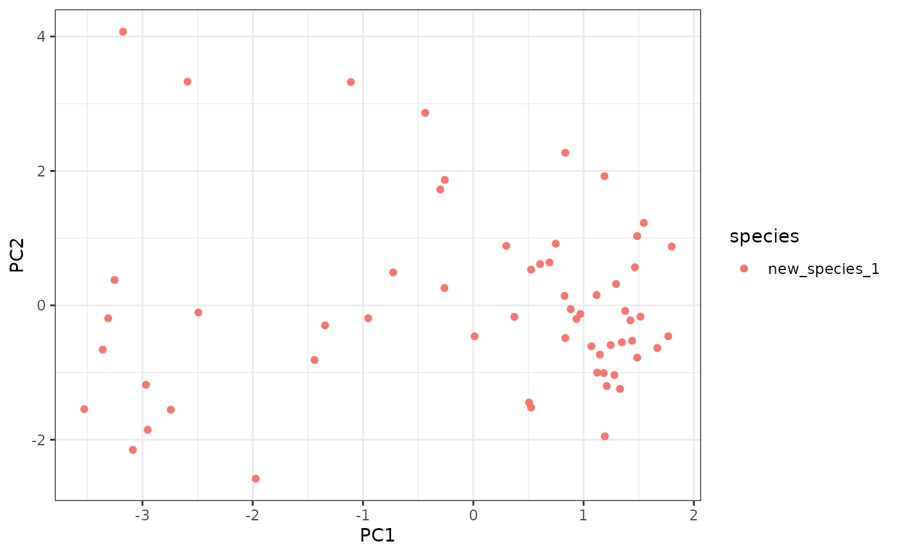
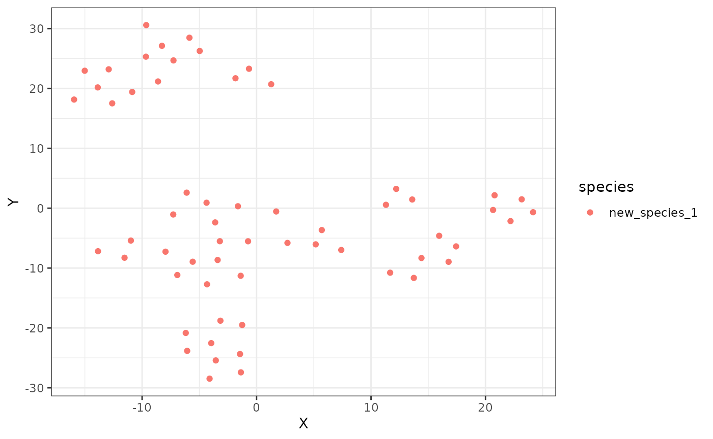
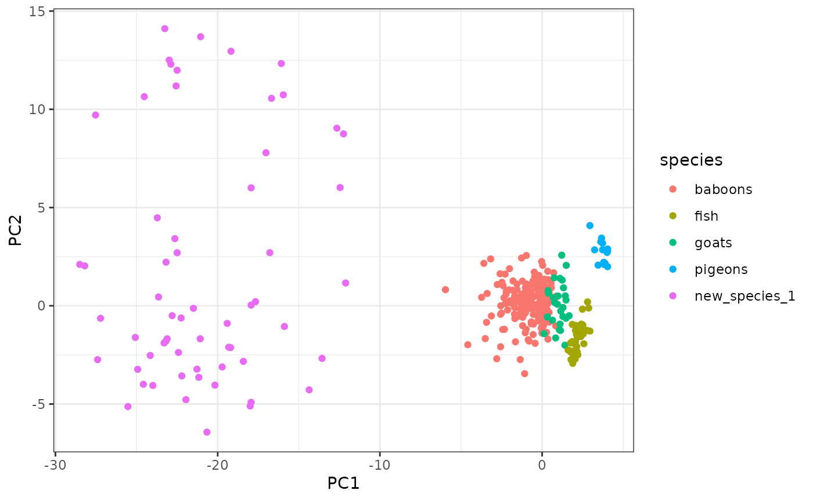
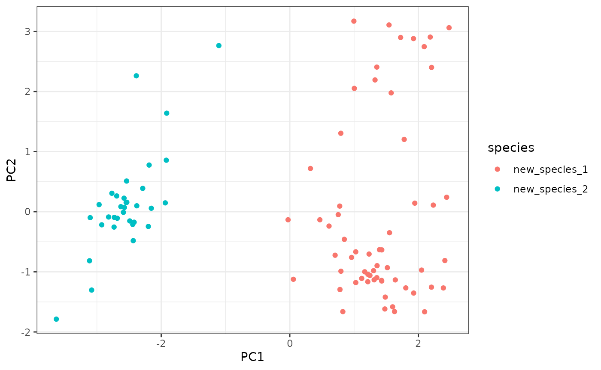

3 - The Swarm-Verse
Marina Papadopoulou
Source:vignettes/step3_swarm_space.Rmd
step3_swarm_space.RmdAfter having analyzed our data, we can examine the intra- and inter-specific variation present across datasets through dimensionality reduction techniques (create ‘swarm spaces’).
3.1 Load data
Load the metrics of collective motion calculated previously. Include the events you want to compare in a swarm space.
library(swaRmverse)
# load pacakge data for many species
data("multi_species_metrics")
## A] Create the swarm space for this data only:
all_data <- multi_species_metrics
## B] Or bind with new data if continuing from step2
data("new_species_metrics") ## loads the output of step 2
new_species_tobind <- new_species_metrics[,!colnames(new_species_metrics) %in% c('event_dur', 'N', 'set', 'start_time')] # remove columns not needed for the swarm space
all_data <- rbind(multi_species_metrics, new_species_tobind)
## C] Or to use just the new data (overwrites previous command, comment out to compare with the other species):
all_data <- new_species_metrics3.2 Build swarm space
Create new swarm space with PCA analysis:
new_pca <- swarm_space(metrics_data = all_data,
space_type = "pca"
)
ggplot2::ggplot(new_pca$swarm_space,
ggplot2::aes(x = PC1, y = PC2, color = species)
) +
ggplot2::geom_point() +
ggplot2::theme_bw()
Check what each principal component represents and get the info of each event:
pca_info <- new_pca$pca$rotation[, new_pca$pca$sdev > 1]
print(pca_info)## PC1 PC2 PC3 PC4
## mean_mean_nnd -0.120557087 -0.47823789 -0.198936000 0.51970748
## mean_sd_nnd 0.006773648 -0.19922584 -0.693308303 0.22378356
## sd_mean_nnd 0.096140524 -0.33849821 0.445329654 -0.12538046
## mean_pol 0.169686225 -0.42069450 -0.035516371 -0.32822763
## sd_pol 0.551102219 0.02143889 -0.114126771 -0.07014666
## cv_speed 0.535969436 -0.10620905 0.006046155 -0.00581108
## mean_sd_front 0.168816754 0.01838288 0.267740886 0.61225187
## mean_mean_bangl -0.048978601 -0.53599416 0.352446821 0.09556011
## mean_shape 0.154168969 0.37491589 0.242066756 0.40886134
## sd_shape 0.549309319 0.01015417 -0.112278306 0.01629187
ref_data <- new_pca$ref
head(ref_data)## event N set start_time event_dur species
## 1 1 8 2020-02-01_ctx1 2020-02-01 12:00:21 1.28 new_species_1
## 2 2 8 2020-02-01_ctx1 2020-02-01 12:00:23 1.12 new_species_1
## 3 3 7 2020-02-01_ctx1 2020-02-01 12:00:25 1.08 new_species_1
## 4 4 8 2020-02-01_ctx1 2020-02-01 12:00:26 0.04 new_species_1
## 5 5 8 2020-02-01_ctx1 2020-02-01 12:00:27 0.32 new_species_1
## 6 6 7 2020-02-01_ctx1 2020-02-01 12:00:28 7.80 new_species_1Or create a new swarm space with tSNE to better study the local structure of the data:
new_tsne <- swarm_space(metrics_data = all_data,
space_type = "tsne",
tsne_rand_seed = 2023,
tsne_perplexity = 10
)
print("t-SNE was run with the following parameters:")## [1] "t-SNE was run with the following parameters:"
print(new_tsne$tsne_setup)## prop vals
## 1 perplexity 10
## 2 random_seed 2023
## 3 max_iter 10000
ggplot2::ggplot(new_tsne$swarm_space, ggplot2::aes(x = X, y = Y, color = species)) +
ggplot2::geom_point() +
ggplot2::theme_bw()
3.3 Expand existing swarm space
Starting from previously generated PCA swarm space, add new data:
data("multi_species_pca")
data("multi_species_pca_data")
new_pca_data <- expand_pca_swarm_space(metrics_data = new_species_metrics,
pca_space = multi_species_pca)
expanded_pca <- rbind(multi_species_pca_data,
new_pca_data)
ggplot2::ggplot(expanded_pca,
ggplot2::aes(x = PC1, y = PC2, color = species)) +
ggplot2::geom_point() +
ggplot2::theme_bw()
3.4 Your own swarm space
To compare several new datasets, one should run the analysis until the end of step 2 for each one of them. Then simply bind the result datasets together and run the swarm spaces as above:
data("new_species_metrics") ## loads the output of step 2
## Use another dataset:
data_df <- get(data("tracks", package = "trackdf"))
data_df$set <- as.Date(data_df$t)
another_species <- col_motion_metrics_from_raw(data_df,
mov_av_time_window = 10,
step2time = 1,
geo = TRUE,
verbose = FALSE,
speed_lim = 0,
pol_lim = 0.3,
parallelize_all = FALSE
)
another_species$species <- "new_species_2"
## Bind all the datasets you want to compare here
all_data <- rbind(another_species, new_species_metrics)
new_pca <- swarm_space(metrics_data = all_data,
space_type = "pca"
)
ggplot2::ggplot(new_pca$swarm_space,
ggplot2::aes(x = PC1, y = PC2, color = species)
) +
ggplot2::geom_point() +
ggplot2::theme_bw()